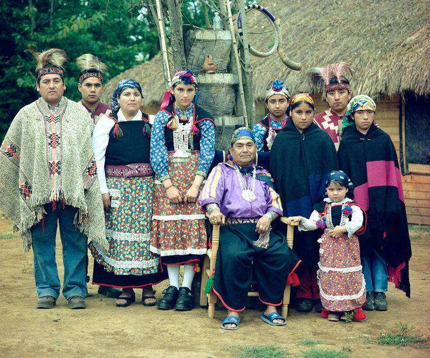
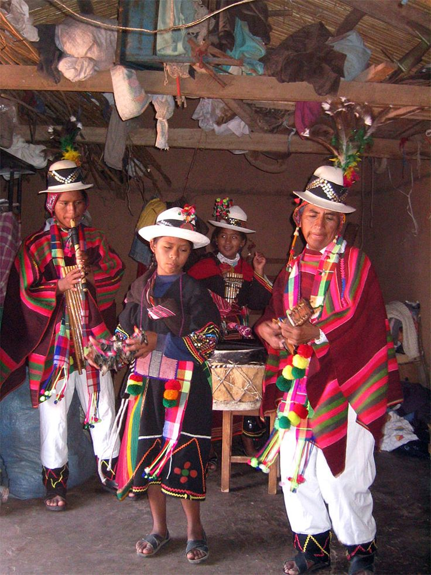

THE MAPUCHE
The Mapuche people of southern Chile are the country’s largest Indigenous group, deeply rooted in the Araucanía Region. Their culture emphasizes a spiritual connection to nature, expressed through ceremonies, traditional medicine, and the communal life of the ruka (family house).
Visitors can experience gastronomy, weaving, and storytelling, gaining insight into a worldview that values balance between humans and the land.

THE AYMARA
The Aymara people, concentrated in Chile’s northern Altiplano, preserve traditions tied to agriculture and Andean cosmology. Their festivals reflect a strong bond with the highland environment, where rituals honor Pachamama (Mother Earth).
Travelers can learn ancestral farming techniques, taste local cuisine, and witness vibrant celebrations that blend spirituality with daily life.